المعلمات النجمية للإصدار الأول من مكتبة MaStar: منهج تجريبي
الملخص
نورد المعلمات الجوية النجمية لـ 7503 طيفًا واردة في الإصدار الأول من مكتبة MaNGA النجمية (MaStar) ضمن SDSS DR15.
يحتوي الإصدار الأول من MaStar على 8646 طيفًا مقاسة من 3321 نجمًا فريدًا،
ويغطي كل منها مجال الأطوال الموجية من
3622 Å إلى 10354 Å بقدرة فصل قدرها 1800.
في هذا العمل، حددنا أولًا المعلمات النجمية الأساسية: درجة الحرارة الفعالة ( )، والجاذبية السطحية (
)، والجاذبية السطحية ( )، والفلزية
(
)، والفلزية
(![$\rm[Fe/H]$](equations/eq_0005.svg) )،
التي تحقق أفضل ملاءمة للبيانات باستخدام مستوفٍ تجريبي قائم على مكتبة Isaac Newton Telescope متوسطة الاستبانة
للأطياف التجريبية (MILES)،
كما تنفذه حزمة University of Lyon
Spectroscopic analysis Software (Koleva et al., 2008, ULySS).
ومع أننا حللنا جميع الأطياف البالغ عددها 8646 من الإصدار الأول من MaStar، فإن MaStar تغطي فضاء معلمات أوسع من MILES، ولذلك ليست جميع هذه الملائمات متينة. إضافة إلى ذلك، لا تنتج جميع مناطق المعلمات التي تغطيها MILES نتائج متينة، ويرجح أن ذلك يعود إلى عدم انتظام تغطية MILES لفضاء المعلمات.
اختبرنا متانة الطريقة باستخدام أطياف MILES نفسها، وحددنا مؤشرًا بديلًا قائمًا على الكثافة المحلية لمجموعة التدريب. وباستخدام هذا المؤشر البديل، حددنا
7503 طيفًا من MaStar ذات نتائج ملاءمة متينة. وهي تغطي المدى من 3179K إلى 20,517K في درجة الحرارة الفعالة (
)،
التي تحقق أفضل ملاءمة للبيانات باستخدام مستوفٍ تجريبي قائم على مكتبة Isaac Newton Telescope متوسطة الاستبانة
للأطياف التجريبية (MILES)،
كما تنفذه حزمة University of Lyon
Spectroscopic analysis Software (Koleva et al., 2008, ULySS).
ومع أننا حللنا جميع الأطياف البالغ عددها 8646 من الإصدار الأول من MaStar، فإن MaStar تغطي فضاء معلمات أوسع من MILES، ولذلك ليست جميع هذه الملائمات متينة. إضافة إلى ذلك، لا تنتج جميع مناطق المعلمات التي تغطيها MILES نتائج متينة، ويرجح أن ذلك يعود إلى عدم انتظام تغطية MILES لفضاء المعلمات.
اختبرنا متانة الطريقة باستخدام أطياف MILES نفسها، وحددنا مؤشرًا بديلًا قائمًا على الكثافة المحلية لمجموعة التدريب. وباستخدام هذا المؤشر البديل، حددنا
7503 طيفًا من MaStar ذات نتائج ملاءمة متينة. وهي تغطي المدى من 3179K إلى 20,517K في درجة الحرارة الفعالة ( )، ومن 0.40 إلى 5.0 في الجاذبية السطحية (
)، ومن 0.40 إلى 5.0 في الجاذبية السطحية ( )، ومن −2.49 إلى
)، ومن −2.49 إلى  0.73 في الفلزية (
0.73 في الفلزية (![$\rm[Fe/H]$](equations/eq_0010.svg) ).
).
1 مقدمة
المكتبة النجمية مجموعة من أطياف نجوم مختلفة، تشترك في مجال الأطوال الموجية والاستبانة نفسيهما، وتغطي فضاء معلمات معينًا للخصائص الجوية. ويمكن أن تكون المكتبة النجمية نظرية (أي قائمة على نماذج الأغلفة الجوية النجمية) أو تجريبية (قائمة على أرصاد طيفية). ومن أمثلة المكتبات النجمية النظرية، على سبيل المثال لا الحصر، Kurucz (1979) وإعادة معايرتها بواسطة Lejeune et al. (1998)، وZwitter et al. (2004); Martins et al. (2005); Munari et al. (2005); Coelho et al. (2005, 2007); Gustafsson et al. (2008); Leitherer et al. (2010); de Laverny et al. (2012) وBohlin et al. (2017). وتشمل أمثلة المكتبات التجريبية Pickles (Pickles, 1985, 1998)، Diaz et al. (1989)، وSilva &Cornell (1992)، وLick/IDS (Worthey et al., 1994)، وLançon & Wood (2000)، وSTELIB (Le Borgne et al., 2003)، وELODIE (Prugniel & Soubiran, 2001)، وINDO-US (Valdes et al., 2004)، وCaT (Cenarro et al., 2001)، وMILES (Sánchez-Blázquez et al., 2006; Falcón-Barroso et al., 2011)، وHST NGSL (Gregg et al., 2006)، وX-Shooter Stellar Library (XSL, Chen et al., 2014)، ومكتبة NASA Infrared Telescope Facility (IRTF) (Rayner et al., 2009)، ومكتبة Extended IRTF (Villaume et al., 2017).
تؤدي المكتبات النجمية دورًا أساسيًا في طيف واسع من تطبيقات الفيزياء الفلكية. وعلى وجه الخصوص، فهي تعمل مرجعًا لتصنيف المسوح الطيفية النجمية الكبيرة وتحليلها آليًا، وتشكل مكونات جوهرية لنماذج التجمعات النجمية المستخدمة في دراسة تطور المجرات.
انبثاقًا من الحاجة إلى نمذجة
أطياف المجرات التي جمعها مسح Mapping Nearby Galaxies at Apache Point Observatory (MaNGA, Bundy et al., 2015; Yan et al., 2016)،
وهو أحد أحدث المسوح الطيفية في SDSS-IV (Blanton et al., 2017)،
طوّرنا مكتبة MaNGA النجمية (MaStar) لبناء مكتبة نجمية كبيرة وشاملة تشترك في
تغطية الأطوال الموجية نفسها لمجرات MaNGA وأطياف SDSS الأخرى، أي 3622 Å – 10354 Å، وتضم
نجومًا تغطي مجالًا واسعًا من فضاء المعلمات النجمية بقدرة فصل مقدارها  . وقد استفدنا من
Apache Point Observatory Galaxy Evolution Experiment 2 (APOGEE-2) لتقليل تكلفة تغطية مساحة كبيرة من السماء، وكذلك من
العديد من المسوح الطيفية النجمية القائمة لانتقاء أهدافنا مسبقًا وفقًا لمعلماتها المقاسة
(انظر Yan et al., 2019, للتفاصيل). وباختصار، أنشأنا قائمة أهداف MaStar من نجوم رُصدت سابقًا ضمن عدة مسوح نجمية كبيرة، أي
APOGEE-1، وAPOGEE-2 (Majewski et al., 2017)، وSDSS/SEGUE (Yanny et al., 2009)، وLAMOST (Cui et al., 2012; Deng et al., 2012; Zhao et al., 2012).
وبالنسبة إلى الحقول التي لا يتوافر فيها عدد كاف من النجوم ذات المعلمات النجمية الموجودة في الأدبيات، فقد قدرنا أيضًا
المعلمات النجمية لملايين النجوم باستخدام PanSTARRS1 (Chambers et al., 2016) و
APASS11
1
https://www.aavso.org/apass، كما وصف Yan et al. (2019).
. وقد استفدنا من
Apache Point Observatory Galaxy Evolution Experiment 2 (APOGEE-2) لتقليل تكلفة تغطية مساحة كبيرة من السماء، وكذلك من
العديد من المسوح الطيفية النجمية القائمة لانتقاء أهدافنا مسبقًا وفقًا لمعلماتها المقاسة
(انظر Yan et al., 2019, للتفاصيل). وباختصار، أنشأنا قائمة أهداف MaStar من نجوم رُصدت سابقًا ضمن عدة مسوح نجمية كبيرة، أي
APOGEE-1، وAPOGEE-2 (Majewski et al., 2017)، وSDSS/SEGUE (Yanny et al., 2009)، وLAMOST (Cui et al., 2012; Deng et al., 2012; Zhao et al., 2012).
وبالنسبة إلى الحقول التي لا يتوافر فيها عدد كاف من النجوم ذات المعلمات النجمية الموجودة في الأدبيات، فقد قدرنا أيضًا
المعلمات النجمية لملايين النجوم باستخدام PanSTARRS1 (Chambers et al., 2016) و
APASS11
1
https://www.aavso.org/apass، كما وصف Yan et al. (2019).
يحصل مشروع MaStar على أطياف نجمية تمتد عبر مجال أوسع من فضاء المعلمات النجمية – الكتلة، ودرجة الحرارة الفعالة
( )، والجاذبية السطحية (
)، والجاذبية السطحية ( )، وفئة اللمعان، والتركيب الكيميائي – مقارنة بأي مكتبة طيفية تجريبية منشورة سابقًا. وعند اكتمال مسح MaStar في 2020، في نهاية SDSS-IV، ستحتوي مكتبة MaStar على ما يقارب 10,000 نجمًا فريدًا.
MaStar DR1 (Yan et al., 2019) جزء من SDSS DR15، وهي متاحة علنًا في https://www.sdss.org/dr15/mastar/.
)، وفئة اللمعان، والتركيب الكيميائي – مقارنة بأي مكتبة طيفية تجريبية منشورة سابقًا. وعند اكتمال مسح MaStar في 2020، في نهاية SDSS-IV، ستحتوي مكتبة MaStar على ما يقارب 10,000 نجمًا فريدًا.
MaStar DR1 (Yan et al., 2019) جزء من SDSS DR15، وهي متاحة علنًا في https://www.sdss.org/dr15/mastar/.
الحصول على الأطياف النجمية هو الخطوة الأولى في بناء مكتبة نجمية. وتتضمن الخطوة التالية
اشتقاق المعلمات النجمية الأساسية كميًا من كل طيف. وبالنسبة إلى التطبيقات التي تستخدم أطيافًا مفردة
في المكتبة، تتيح هذه المعلمات للباحثين اختيار النجوم المناسبة للمقارنة. أما في تركيب التجمعات النجمية،
فهذه المعلمات مطلوبة لربط كل طيف بموضع على مسار تطور نجمي أو خط تساوي عمر.
جمعنا معلمات الأدبيات لـ  من
النجوم في MaStar DR1. غير أن جزءًا كبيرًا، أي نسبة 30% المتبقية من أهداف MaStar، لا يمتلك معلمات نجمية مُدخلة.
علاوة على ذلك، ونظرًا إلى أن النجوم ذات المعلمات النجمية المعروفة جُمعت من مسوح نجمية مختلفة، فإن مزج المنهجيات المختلفة قد يخلق عدم تجانس. لذلك نهدف إلى حساب مجموعة متسقة من المعلمات النجمية
لجميع أطياف MaStar. وفضلًا عن ذلك، ولضمان الاستمرارية مع الأعمال السابقة حول تطور المجرات (مثلًا، Vazdekis et al., 2010; Maraston & Strömbäck, 2011; Conroy & van Dokkum, 2012)، نشترط أن تكون نتائجنا متوافقة مع مكتبة MILES، وهي الأحدث والأكثر تقدمًا في هذا المجال.
استُخدمت المعلمات المستخلصة في هذه الورقة في أول
نماذج للتجمعات النجمية قائمة على MaStar (E-MaStar، حيث يشير E إلى ‘تجريبي’، إقرارًا بالطبيعة شبه التجريبية للمعلمات المحددة هنا؛ Maraston et al., 2020 in press)
من
النجوم في MaStar DR1. غير أن جزءًا كبيرًا، أي نسبة 30% المتبقية من أهداف MaStar، لا يمتلك معلمات نجمية مُدخلة.
علاوة على ذلك، ونظرًا إلى أن النجوم ذات المعلمات النجمية المعروفة جُمعت من مسوح نجمية مختلفة، فإن مزج المنهجيات المختلفة قد يخلق عدم تجانس. لذلك نهدف إلى حساب مجموعة متسقة من المعلمات النجمية
لجميع أطياف MaStar. وفضلًا عن ذلك، ولضمان الاستمرارية مع الأعمال السابقة حول تطور المجرات (مثلًا، Vazdekis et al., 2010; Maraston & Strömbäck, 2011; Conroy & van Dokkum, 2012)، نشترط أن تكون نتائجنا متوافقة مع مكتبة MILES، وهي الأحدث والأكثر تقدمًا في هذا المجال.
استُخدمت المعلمات المستخلصة في هذه الورقة في أول
نماذج للتجمعات النجمية قائمة على MaStar (E-MaStar، حيث يشير E إلى ‘تجريبي’، إقرارًا بالطبيعة شبه التجريبية للمعلمات المحددة هنا؛ Maraston et al., 2020 in press)
في هذا العمل، نركز على تحديد
ثلاث معلمات نجمية أساسية: درجة الحرارة الفعالة،  ، والجاذبية السطحية،
، والجاذبية السطحية،  ،
والفلزية،
،
والفلزية، ![$\rm[Fe/H]$](equations/eq_0017.svg) .
في القسم 2 نستعرض بإيجاز بيانات MaStar. وفي القسم 3 نعرض المنهج
المستخدم لتحديد المعلمات النجمية لـ MaStar DR1. وتُناقش مراقبة جودة المعلمات النجمية في القسم 4.
ونصف المنهج المستخدم للتحقق من نتائجنا في القسم 5، ونبين الاتساق مع معلمات الأدبيات
في القسم 6. ونلخص نتائجنا واستنتاجاتنا في القسم 7.
.
في القسم 2 نستعرض بإيجاز بيانات MaStar. وفي القسم 3 نعرض المنهج
المستخدم لتحديد المعلمات النجمية لـ MaStar DR1. وتُناقش مراقبة جودة المعلمات النجمية في القسم 4.
ونصف المنهج المستخدم للتحقق من نتائجنا في القسم 5، ونبين الاتساق مع معلمات الأدبيات
في القسم 6. ونلخص نتائجنا واستنتاجاتنا في القسم 7.
2 البيانات
صُمم برنامج MaStar للحصول على أطياف بصرية باستخدام حزم ألياف MaNGA جنبًا إلى جنب مع أرصاد APOGEE-2N أثناء أرصاد الوقت الساطع التي يقودها APOGEE.22 2 استكمل MaStar بروتوكول MaStar الرئيسي ببعض صفائح الرصد التي قادها MaStar. لذلك فإن الأطياف النجمية لـ MaStar تشترك في استبانات الأجهزة نفسها مع الأطياف التي حُصل عليها لمجرات MaNGA، مما يجعلها مثالية لبناء القوالب المستخدمة في نمذجة المتصل النجمي وتجمعات هذه المصادر. أُجري اختزال بيانات أطياف MaStar بواسطة MaNGA Data Reduction Pipeline (DRP؛ Law et al., 2016)، وهي حزمة برمجية قائمة على IDL تنتج مكعبات بيانات نهائية معايرة التدفق من أطياف الألياف المشتتة الخام. ونحيل القراء إلى Law et al. (2016) للاطلاع على تفاصيل DRP. وبعد اختزال البيانات، استبعدنا الأطياف ذات نسبة الإشارة إلى الضجيج المنخفضة، أو طرح السماء الرديء، أو الضوء المتشتت العالي، أو كسر تغطية دالة الانتشار النقطي (PSF) المنخفض، أو قياس السرعة الشعاعية غير المؤكد، و/أو تلك ذات معايرة التدفق الإشكالية. إضافة إلى ذلك، فحصنا بصريًا كل طيف باستخدام واجهة Zooniverse Project Builder 33 3 https://www.zooniverse.org/lab. وشارك ما مجموعه 28 متطوعًا من داخل التعاون للتحقق من مشكلات معايرة التدفق، وطرح السماء، وطرح الامتصاص التلوري، وخطوط الانبعاث، وما إلى ذلك. وتُدخل النتائج إلى DRP لإسناد أعلام الجودة النهائية.
الأطياف التي استخدمناها في هذا العمل مأخوذة من الإصدار الأول من MaStar (Yan et al., 2019). وتمتد هذه الأطياف على أطوال موجية
من 3622 Å إلى 10354 Å بقدرة فصل قدرها ، وهي متاحة في DR15 من SDSS-IV (Aguado et al., 2019). ولكل طيف، يُوفَّر التدفق المعاير، والتباين العكسي للتدفق، ودالة انتشار الخط (LSF) الدقيقة، والقناع
بوصفها دوال في الطول الموجي. في الشكل 1، نعرض توزيع وسيط نسبة الإشارة إلى الضجيج (S/N) على كامل تغطية الأطوال الموجية لجميع الأطياف الواردة في الإصدار الأول من MaStar. ومعظم الأطياف ( )
لها متوسط S/N أعلى من 50. يحتوي هذا الإصدار من MaStar على 3321 نجمًا فريدًا مع
8646 طيفًا ذات معايرة تدفق دقيقة، ضمن (Yan et al., 2019).
)
لها متوسط S/N أعلى من 50. يحتوي هذا الإصدار من MaStar على 3321 نجمًا فريدًا مع
8646 طيفًا ذات معايرة تدفق دقيقة، ضمن (Yan et al., 2019).
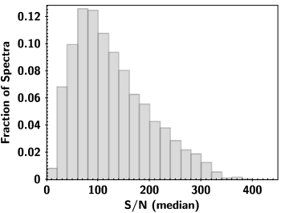
3 المنهجية
لتحديد المعلمات النجمية لأجسام MaStar نستخدم حزمة ملاءمة الطيف الكامل
ULySS44
4
http://ulyss.univ-lyon1.fr/ (Koleva et al., 2008).
تجري هذه الحزمة ملاءمة  بين طيف قالب والبيانات، حيث يُستوفى طيف النموذج
بين مجموعة أطياف ذات معلمات نجمية معروفة هي و
بين طيف قالب والبيانات، حيث يُستوفى طيف النموذج
بين مجموعة أطياف ذات معلمات نجمية معروفة هي و و
و![$\rm[Fe/H]$](equations/eq_0024.svg) .
والفكرة الأساسية هي أن المستوفي يقارب التدفق المطبع في كل خانة طيفية بوصفه كثيرات حدود في
.
والفكرة الأساسية هي أن المستوفي يقارب التدفق المطبع في كل خانة طيفية بوصفه كثيرات حدود في  ،
و
،
و![$\rm [Fe/H]$](equations/eq_0026.svg) ، و
، و ، مع تعريف كل مجموعة من كثيرات الحدود لثلاث مجموعات من النجوم (OBA وFGK وM).
طُبق الاستيفاء في مناطق متداخلة بين المجموعات في فضاء المعلمات. وتتيح الخوارزمية استخدام كثيرات حدود Legendre
لمراعاة الخمود المتبقي و/أو منهجيات معايرة التدفق.
، مع تعريف كل مجموعة من كثيرات الحدود لثلاث مجموعات من النجوم (OBA وFGK وM).
طُبق الاستيفاء في مناطق متداخلة بين المجموعات في فضاء المعلمات. وتتيح الخوارزمية استخدام كثيرات حدود Legendre
لمراعاة الخمود المتبقي و/أو منهجيات معايرة التدفق.
نُشرت عدة مستوفيات من المجموعة نفسها، مثل مستوفي ELODIE (Wu et al., 2011)، ومستوفي MILES (Prugniel et al., 2011)، ومستوفي MILES الموسع (Sharma et al., 2016)، الذي يمد مستوفي MILES ليشمل النجوم الباردة (4500K) من أرشيف FEROS، مع معلمات نجمية مأخوذة من Allen (1973) وCasagrande et al. (2008) وNeves et al. (2013). غير أن نتائجنا، القائمة على مستوفي MILES الموسع، تظهر تموجات مصطنعة في منطقة الأقزام الباردة. لذلك نفضل استخدام نسخة أقدم من مستوفي MILES (Prugniel et al., 2011)، تمتد على مجال أوسع من المعلمات النجمية مقارنة بالمستوفي القائم على مكتبة ELODIE. كما أن مكتبة MILES لها تغطية أطوال موجية أوسع من مكتبة ELODIE. ولم تُستخدم المعلمات النجمية لـ MILES من Cenarro et al. (2007) في بناء هذا المستوفي، لأنها قائمة على توليفة غير متجانسة من تجميع أدبيات ومعايرة ضوئية (Prugniel et al., 2011). وبدلًا من ذلك، بُني مستوفي MILES المستخدم في هذا العمل بإعادة حساب المعلمات النجمية لأطياف MILES باستخدام ELODIE 3.2 (Wu et al., 2011) مرجعًا للمعلمات الجوية النجمية المتجانسة، مع حل شبه تجريبي (Prugniel et al., 2007) أُدخل لتغطية مجال أفضل من المعلمات الجوية باستخدام أطياف نظرية لنجوم حارة ذات من Martins et al. (2005). وأُدرجت أيضًا بعض الأقزام الباردة منخفضة الفلزية من Coelho et al. (2005) لتوسيع تغطية المعلمات النجمية.
نقدر المعلمات النجمية ببناء شبكة تخمين أولية لتحديد مجال المعلمات الممكن، أي
 =[3500, 4000, 5600, 7000, 10000, 30000]K،
و، و [1.8, 3.8]، بحيث يستطيع المستوفي إيجاد أقرب منطقة معلمات لاستخدامها نقطة بداية.
ونظرًا إلى أن أطياف MaStar تمتد على مجال أطوال موجية قدره 3622–10354 Å، فإننا نستخدم مجال الأطوال الموجية المشترك
(أي 3622–7400Å) بين MILES وMaStar في عملية ملاءمة الطيف الكامل. واستُخدمت أطياف الخطأ، مع البيانات،
لإيجاد أفضل ملاءمة، مع حجب البكسلات الرديئة. وتُجرى الملاءمة الأولية بإيجاد أصغر
=[3500, 4000, 5600, 7000, 10000, 30000]K،
و، و [1.8, 3.8]، بحيث يستطيع المستوفي إيجاد أقرب منطقة معلمات لاستخدامها نقطة بداية.
ونظرًا إلى أن أطياف MaStar تمتد على مجال أطوال موجية قدره 3622–10354 Å، فإننا نستخدم مجال الأطوال الموجية المشترك
(أي 3622–7400Å) بين MILES وMaStar في عملية ملاءمة الطيف الكامل. واستُخدمت أطياف الخطأ، مع البيانات،
لإيجاد أفضل ملاءمة، مع حجب البكسلات الرديئة. وتُجرى الملاءمة الأولية بإيجاد أصغر  بين
الطيف المرصود وطيف MILES مستوفى. ثم نسمح للمستوفي بالبحث عن
حل أفضل في فضاء المعلمات داخل الشبكة عبر إيجاد الملاءمة النهائية ذات أفضل
بين
الطيف المرصود وطيف MILES مستوفى. ثم نسمح للمستوفي بالبحث عن
حل أفضل في فضاء المعلمات داخل الشبكة عبر إيجاد الملاءمة النهائية ذات أفضل  في فضاء الحل المحلي.
في فضاء الحل المحلي.
كما ذكر Prugniel et al. (2011) وWu et al. (2011)، قد تؤثر دالة انتشار الخط (LSF) في إجراء ملاءمة الطيف الكامل.
لذلك نحسب الفرق بين LSF لكل طيف MaStar مُدخل والاستبانة الجوهرية.
وقد حسبت عدة مجموعات الاستبانة الجوهرية لمكتبة MILES عقب نشرها.
اشتق Falcón-Barroso et al. (2011) القيمة FWHM=2.51Å. كما حُسبت قيمة مشابهة
لاستبانة MILES، FWHM =2.54Å،
بواسطة Beifiori et al. (2011). هنا نستخدم FWHM=2.51Å لقوالب MILES.
ثم تُجرى لقوالب مستوفي MILES عملية التفاف إلى الاستبانة نفسها لطيف MaStar الفردي.
وبما أن LSF تتغير مع الطول الموجي، أجرينا تبعًا لذلك التفافًا لقوالب MILES بوصفها دالة في الطول الموجي.
وتُحصل أفضل ملاءمة بمقارنة أطياف النموذج المستوفاة من MILES وبيانات MaStar ببكسلات حجمها 69.03  ، ومتباعدة بانتظام في لوغاريتم الطول الموجي.
وتُستخدم كثيرة حدود ضربية في عملية الملاءمة لمطابقة الشكل الكلي بين
البيانات والنموذج. وكما ذكر Yan et al. (2019)، فإن أطياف MaStar غير مصححة للخمود.
لذلك، عند إجراء ملاءمة الطيف، نحتاج إلى افتراض كثيرة حدود
لتصحيح الفروق في الشكل عريض النطاق الناتجة عن آثار الخمود و/أو بقايا معايرة التدفق.
استخدمنا في البداية كثيرة حدود ضربية من الرتبة 10 لمراعاة هذه الآثار، ثم خفضنا
رتبة كثيرة الحدود في التكرارات اللاحقة لتحقيق ملاءمات أفضل. ثم تُضرب كثيرة الحدود النهائية
في البيانات لتطابق القالب المسند.
في MaStar DR1 يوجد
، ومتباعدة بانتظام في لوغاريتم الطول الموجي.
وتُستخدم كثيرة حدود ضربية في عملية الملاءمة لمطابقة الشكل الكلي بين
البيانات والنموذج. وكما ذكر Yan et al. (2019)، فإن أطياف MaStar غير مصححة للخمود.
لذلك، عند إجراء ملاءمة الطيف، نحتاج إلى افتراض كثيرة حدود
لتصحيح الفروق في الشكل عريض النطاق الناتجة عن آثار الخمود و/أو بقايا معايرة التدفق.
استخدمنا في البداية كثيرة حدود ضربية من الرتبة 10 لمراعاة هذه الآثار، ثم خفضنا
رتبة كثيرة الحدود في التكرارات اللاحقة لتحقيق ملاءمات أفضل. ثم تُضرب كثيرة الحدود النهائية
في البيانات لتطابق القالب المسند.
في MaStar DR1 يوجد  من النجوم ذات
. غير أن هذا لا يؤثر في المعلمات النهائية، لأننا نعتمد على النسب النسبية للخطوط في نتيجة ملاءمة الطيف الكامل.
من النجوم ذات
. غير أن هذا لا يؤثر في المعلمات النهائية، لأننا نعتمد على النسب النسبية للخطوط في نتيجة ملاءمة الطيف الكامل.
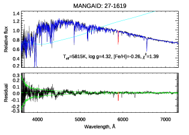
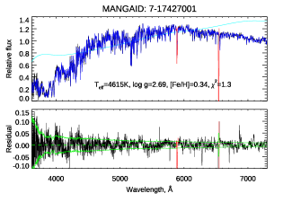
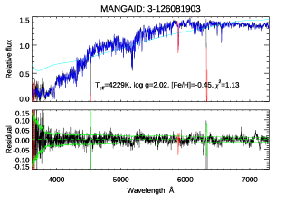
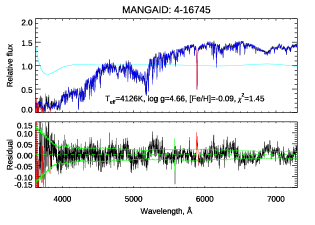
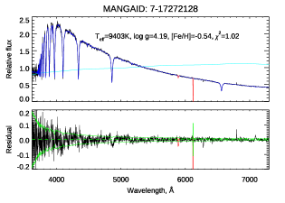
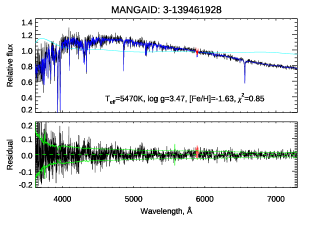
يعرض الشكل 2 بعض أمثلة ملاءمات الطيف الكامل لأطياف MaStar.
الأطياف السوداء هي أرصاد MaStar، والأطياف الزرقاء
هي أفضل الملاءمات من مستوفي MILES. وتُظهر الخطوط السماوية كثيرة الحدود المستخدمة، بينما تحجب مناطق الخط الأحمر البكسلات
الرديئة. وتشمل البكسلات الرديئة البكسلات المعلمة بعلم قناع MaStar والمنطقة المحيطة بسمة Na D 5900، لأن الأخيرة تعاني عادة
من امتصاص بين نجمي.
وتعرض اللوحة السفلية الباقي بين البيانات والنموذج، مع الطيف الأخضر الذي يحدد مستوى خطأ واحد سيغما.
وتُعطى المعلمات الجوية النجمية المشتقة وقيمة  المخفضة في كل لوحة.
المخفضة في كل لوحة.
4 ضبط الجودة
لاءمنا 8646 طيفًا مقاسة لـ 3321 نجمًا فريدًا في MaStar. وللتأكد من أن المعلمات النجمية المشتقة من عملية ملاءمة الطيف الكامل معقولة، تحققنا من الملاءمة الطيفية حالةً بحالة عند الحاجة.
4.1 آثار جودة البيانات
نعرّف مجالين من الأطوال الموجية لمراقبة نسبة الإشارة إلى الضجيج العامة في أطياف MaStar – الأزرق: 3600–5500Å، والأحمر: 5000–7500Å. أما الأطوال الموجية التي تتجاوز 7500Å فهي خارج مجال قوالب MILES، ولذلك لا تُناقش هنا. ومن بين الأرصاد البالغ عددها 8646، يوجد نحو ذات نسبة إشارة إلى ضجيج منخفضة، أقل من خمسة في المنطقتين الزرقاء والحمراء. فإذا كان لأي من مجالي الأطوال الموجية أعلاه قيمة وسيط لنسبة الإشارة إلى الضجيج أقل من خمسة، أو كانت قيمة وسيط نسبة الإشارة إلى الضجيج عبر مجال الأطوال الموجية كله أقل من 35، فإن الأطياف توسم بأنها ذات نسبة إشارة إلى ضجيج منخفضة. وقررنا عدم استخدام حلولها بسبب هذه القيود.
4.2 تقييم أفضل ملاءمة
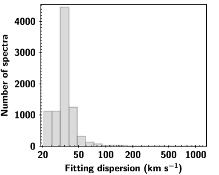
 .
.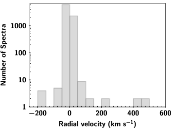
لأن المستوفي نفسه له حدود في فضاء المعلمات،
تُرفض الملاءمات التي تعيد قيمة عند أطراف فضاء المعلمات
عند  =[2800, 40000]K، و، و (عددها 48 جسمًا55
5
تهيمن على هذه الأجسام عمالقة وأشباه عمالقة تعذر تحديد فلزيتها على نحو صحيح.).
وبوصفها حزمة ملاءمة مرنة، تتيح عملية الملاءمة توسيع القالب لمحاكاة دوران النجوم، غير أننا لا نتوقع
توسيعًا يضاهي تشتتات سرعات المجرات، أي بضع مئات
=[2800, 40000]K، و، و (عددها 48 جسمًا55
5
تهيمن على هذه الأجسام عمالقة وأشباه عمالقة تعذر تحديد فلزيتها على نحو صحيح.).
وبوصفها حزمة ملاءمة مرنة، تتيح عملية الملاءمة توسيع القالب لمحاكاة دوران النجوم، غير أننا لا نتوقع
توسيعًا يضاهي تشتتات سرعات المجرات، أي بضع مئات  . وقد يشير مثل هذا التوسيع الكبير للقالب
إلى عدم تطابق القالب، أو انخفاض نسبة الإشارة إلى الضجيج، أو احتمال وجود نظام ثنائي.
وفي كل الأحوال، إذا أسفرت الملاءمة عن توسيع أكبر من 200 ، فإننا نصنفها على أنها غير ناجحة.
ويظهر توزيع تشتت الملاءمة في الشكل 3.
الغالبية العظمى من أطياف MaStar مزاحة إلى إطار السكون، ومن ثم فإن ملاءمة السرعة الشعاعية التي نجريها تهدف إلى تصحيح
أي إزاحة سرعة متبقية. ونتيجة لذلك، فإن بواقي السرعة الشعاعية
ذات القيم الكبيرة (أي ) قد تشير أيضًا إلى
ملاءمات غير ناجحة. نعرض توزيع
بواقي السرعة الشعاعية في الشكل 4.
وعادةً، عندما يحدث ذلك، تخلط الحزمة بين سمات الامتصاص في البيانات وتلك في النماذج.
لذلك لا تُعد المعلمات النجمية المقابلة مأمونة.
. وقد يشير مثل هذا التوسيع الكبير للقالب
إلى عدم تطابق القالب، أو انخفاض نسبة الإشارة إلى الضجيج، أو احتمال وجود نظام ثنائي.
وفي كل الأحوال، إذا أسفرت الملاءمة عن توسيع أكبر من 200 ، فإننا نصنفها على أنها غير ناجحة.
ويظهر توزيع تشتت الملاءمة في الشكل 3.
الغالبية العظمى من أطياف MaStar مزاحة إلى إطار السكون، ومن ثم فإن ملاءمة السرعة الشعاعية التي نجريها تهدف إلى تصحيح
أي إزاحة سرعة متبقية. ونتيجة لذلك، فإن بواقي السرعة الشعاعية
ذات القيم الكبيرة (أي ) قد تشير أيضًا إلى
ملاءمات غير ناجحة. نعرض توزيع
بواقي السرعة الشعاعية في الشكل 4.
وعادةً، عندما يحدث ذلك، تخلط الحزمة بين سمات الامتصاص في البيانات وتلك في النماذج.
لذلك لا تُعد المعلمات النجمية المقابلة مأمونة.
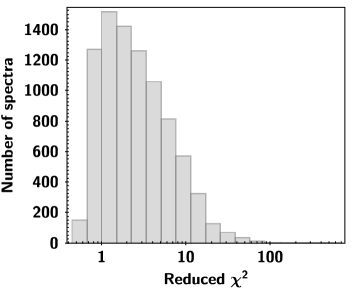
 المخفضة من ملاءمة الطيف الكامل لأطياف MaStar في DR1.
10 من أصل 8646 ملاءمة لها
المخفضة من ملاءمة الطيف الكامل لأطياف MaStar في DR1.
10 من أصل 8646 ملاءمة لها  مخفضة أكبر من 100.
مخفضة أكبر من 100.فضلًا عن المسائل أعلاه، كانت لدينا أيضًا حالات قليلة كانت فيها الأخطاء المشتقة للمعلمات المقابلة صفرية.
ورُفضت تلك الملاءمات بوصفها ملاءمات فاشلة أيضًا.
تحسب عملية ملاءمة الطيف الكامل  المخفضة، وهي
مؤشر إلى نجاح الملاءمة. نعرض توزيع
المخفضة، وهي
مؤشر إلى نجاح الملاءمة. نعرض توزيع  المخفضة في الشكل 5.
وقد علمنا الملاءمات ذات المخفضة. ويحدث هذا عادة في الأطياف المدخلة ذات سمات
انبعاث قوية عند درجات حرارة منخفضة جدًا () أو مرتفعة جدًا ().
المخفضة في الشكل 5.
وقد علمنا الملاءمات ذات المخفضة. ويحدث هذا عادة في الأطياف المدخلة ذات سمات
انبعاث قوية عند درجات حرارة منخفضة جدًا () أو مرتفعة جدًا ().
لاحظ أن مكتبة MILES الأصلية تضم عددًا محدودًا من الأقزام الباردة ( 15 نجمًا؛ Yan et al., 2019). لذلك ينبغي التعامل بحذر مع نتائج النجوم الباردة
المستندة إلى هذه النسخة من المستوفي.
15 نجمًا؛ Yan et al., 2019). لذلك ينبغي التعامل بحذر مع نتائج النجوم الباردة
المستندة إلى هذه النسخة من المستوفي.
إضافة إلى ذلك، لدى كثير من النجوم في MaStar DR1 أرصاد مكررة. وتعطي القياسات المستقلة لمعلماتها النجمية من ملاءمة الطيف الكامل نتائج متسقة، إذ تختلف المعلمات النجمية المشتقة من ملاءمتنا لأطياف مختلفة للجسم نفسه عادة بمقدار 40K، و 0.04 dex، و dex.
5 التحقق
لأن مستوفي MILES مبني من مكتبة MILES، فإنه لا يستطيع تقديم نتائج صالحة إلا في مناطق فضاء المعلمات التي عينتها مكتبة MILES جيدًا. وعندما يُستخدم لملاءمة نجوم لا يوجد لها عدد كاف من النجوم المشابهة في مكتبة MILES، فقد ينتج نتائج ذات أخطاء كبيرة جدًا. وفي الواقع، أبلغ Coelho et al. (2020, انظر جدولهم 2) عن نجمًا في مكتبة MILES قد لا تكون مناسبة كمدخلات لنماذج التجمعات النجمية. هنا، نقدم طريقة لتحديد مثل هذه الحالات باستخدام المعلمات الناتجة ومجموعة التدريب للمستوفي فقط. ومع أن هذا لن يحدد جميع الأخطاء الكبيرة، فإنه يقلل معدلها بدرجة ملحوظة. كما يتيح لنا تقدير كسر التلوث المتبقي في المعلمات النجمية المشتقة بسبب عدم انتظام فضاء معلمات الإدخال في المستوفي.
تفترض هذه الطريقة أننا لا نستطيع تقدير المعلمات على نحو موثوق لطيف نجمي معين إلا إذا كانت معلماته محاطة بالكامل بمجموعة تدريب المستوفي. غير أننا لا نعرف إلا النتيجة الخارجة من المستوفي. لذلك ننشئ مقياسًا قائمًا على معلمات خرج النجم ومعلمات إدخال مجموعة التدريب. ثم نحاول تحديد عتبة لهذا المقياس باستخدام مجموعة التدريب نفسها عينة اختبار. ومن خلال ملاءمة أطياف مجموعة التدريب، أي أطياف MILES، بمستوفي MILES نفسه، نستطيع التحقق مما إذا كانت أي أطياف لديها إزاحات كبيرة في معلماتها المشتقة، وما إذا كان يمكن تحديدها بنجاح باستخدام المقياس والعتبة المرتبطة به.
أولًا، نلائم أطياف MILES الفردية باستخدام مستوفي MILES. وهذا أيضًا اختبار إدخال-إخراج أساسي لكود ULySS ومستوفي MILES. من حيث المبدأ، ينبغي أن تكون المعلمات النجمية الخارجة مطابقة أو قريبة جدًا من قيم الإدخال، لكن هذا لا يحدث دائمًا.
يعرض الشكل 6 المعلمات النجمية المسترجعة لأطياف MILES مقارنة بقيم إدخالها. لاحظ أن المعلمات النجمية المحسوبة لنجوم MILES لا تكون دائمًا مماثلة لمعلمات الإدخال كما أعطاها Prugniel et al. (2011). ولفحص التوزيع العام للمعلمات في النتائج، نعرض توزيع معلمات نتائج الإدخال والإخراج في الشكل 7، حيث تمثل الدوائر الحمراء المفتوحة المعلمات النجمية من Prugniel et al. (2011) وتمثل النقاط الزرقاء المصمتة المعلمات النجمية المسترجعة لأطياف MILES باستخدام مستوفي MILES. ونظرًا إلى التوزيع غير المنتظم لمجموعة التدريب في فضاء المعلمات النجمية، تنحاز المعلمات المسترجعة نحو المناطق ذات العدد الأكبر من النجوم في فضاء معلمات الإدخال. ويكون ذلك أوضح في مناطق درجات الحرارة الحارة جدًا أو الباردة جدًا، حيث تحتوي مجموعة تدريب المستوفي على عدد أقل من النجوم.
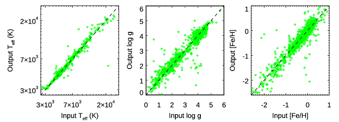
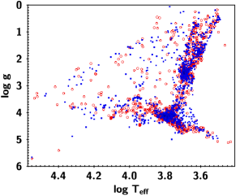
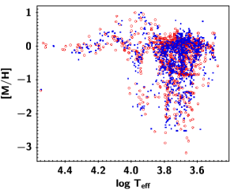
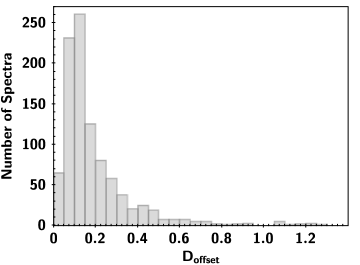
 (انظر النص للتفاصيل) لمعلمات إدخال مستوفي MILES استنادًا إلى Prugniel et al. (2011).
(انظر النص للتفاصيل) لمعلمات إدخال مستوفي MILES استنادًا إلى Prugniel et al. (2011).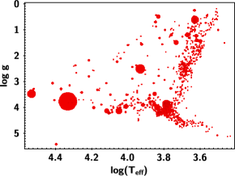
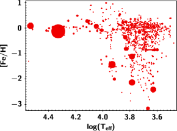
 ؛ فالرموز الأكبر تقابل أخطاء منهجية أكبر في استرجاع المعلمات النجمية.
؛ فالرموز الأكبر تقابل أخطاء منهجية أكبر في استرجاع المعلمات النجمية.للأبعاد الثلاثة في فضاء المعلمات ( و
و و
و![${\rm [Fe/H]}$](equations/eq_0064.svg) ) وحدات مختلفة. نعرّف وحدة مسافة ثلاثية الأبعاد مطبعة بين أي نقطتين في فضاء المعلمات عبر تطبيع الفرق في كل بعد على نحو مناسب بحيث يكون عدم اليقين النموذجي في كل بعد متقاربًا في هذه الوحدة المطبعة. ويمكن تحقيق ذلك تقريبيًا إذا قسنا المجال الأقصى الممتد في (من 3.477 إلى 4.550) إلى 10، وقسنا ذلك في
) وحدات مختلفة. نعرّف وحدة مسافة ثلاثية الأبعاد مطبعة بين أي نقطتين في فضاء المعلمات عبر تطبيع الفرق في كل بعد على نحو مناسب بحيث يكون عدم اليقين النموذجي في كل بعد متقاربًا في هذه الوحدة المطبعة. ويمكن تحقيق ذلك تقريبيًا إذا قسنا المجال الأقصى الممتد في (من 3.477 إلى 4.550) إلى 10، وقسنا ذلك في  (من 0.17 إلى 5.7) إلى 3، وقسنا ذلك في [Fe/H] (من -3.15 إلى +1.0) إلى 2. ولكل نجم في MILES، نحسب المسافة بين معلماته المسترجعة ومعلمات إدخاله بهذه الوحدة المطبعة، ونسميها
(من 0.17 إلى 5.7) إلى 3، وقسنا ذلك في [Fe/H] (من -3.15 إلى +1.0) إلى 2. ولكل نجم في MILES، نحسب المسافة بين معلماته المسترجعة ومعلمات إدخاله بهذه الوحدة المطبعة، ونسميها  . نعرض توزيع
. نعرض توزيع  في الشكل 8. ولدى ما مجموعه 94% من النجوم قيمة
في الشكل 8. ولدى ما مجموعه 94% من النجوم قيمة  أقل من 0.5.
يوضح الشكل 9 استقرار المعلمات النجمية. والمناطق ذات الرموز الأكبر هي المناطق ذات عدم اليقين الأكبر في فضاء معلمات الإدخال، أي ذات
أقل من 0.5.
يوضح الشكل 9 استقرار المعلمات النجمية. والمناطق ذات الرموز الأكبر هي المناطق ذات عدم اليقين الأكبر في فضاء معلمات الإدخال، أي ذات  أكبر.
وإذا توزعت قيمة
أكبر.
وإذا توزعت قيمة  بالتساوي بين الأبعاد الثلاثة، فإن الإزاحة في كل بعد تكون 0.29 في الوحدة المطبعة، وهو ما يقابل و و.
بالتساوي بين الأبعاد الثلاثة، فإن الإزاحة في كل بعد تكون 0.29 في الوحدة المطبعة، وهو ما يقابل و و.
لكل نجم، وبالنظر إلى معلماته المسترجعة، نبحث عن جيرانه في فضاء معلمات (الإدخال) ضمن مجموعة التدريب. لاحظ أن البحث عن الجيران يجري بين معلمات الإخراج للنجم موضع الاهتمام ومعلمات الإدخال لمجموعة التدريب. ونقوم بذلك بهذه الطريقة لأننا لا نعرف إلا معلمات الإخراج لأجسام MaStar. ولكل نجم (MILES أو MaStar)، نعرّف مسافة الجار الأقرب رقم 4 ضمن مجموعة التدريب، مرة أخرى في الوحدة المطبعة، ونسميها  . ونختار استخدام أقرب أربعة نجوم لأن
أربع نقاط على الأقل لازمة لتعريف حجم (رباعي وجوه) يحيط بنقطة في فضاء المعلمات ثلاثي الأبعاد 3D.
ونهدف إلى إيجاد عتبة في
. ونختار استخدام أقرب أربعة نجوم لأن
أربع نقاط على الأقل لازمة لتعريف حجم (رباعي وجوه) يحيط بنقطة في فضاء المعلمات ثلاثي الأبعاد 3D.
ونهدف إلى إيجاد عتبة في  لضمان أن معظم النجوم ذات
لضمان أن معظم النجوم ذات  الأصغر من العتبة لديها
الأصغر من العتبة لديها  صغيرة.
صغيرة.
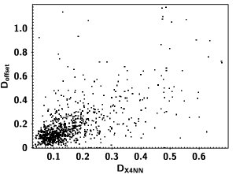
 بدلالة
بدلالة  . لاحظ أن المسافات مقيسة (انظر النص للتفاصيل).
. لاحظ أن المسافات مقيسة (انظر النص للتفاصيل).قد توجد حالات يكون فيها الجيران الأربعة الأقرب حول النجم موضع الاهتمام متكتلين جميعًا في جانب واحد، وأقرب بكثير بعضهم إلى بعض مما هم إلى النجم موضع الاهتمام. هنا لا نشترط أن يكون النجم موضع الاهتمام محاطًا بالكامل برباعي الوجوه، إذ إن بعض الاستقراء المعتدل قد يعطي نتائج معقولة. ونشترط فقط أن تكون  أصغر من أكبر مسافة زوجية بين جيرانه.
توجد ست مسافات بين الجيران الأربعة. ونسمي أكبرها
أصغر من أكبر مسافة زوجية بين جيرانه.
توجد ست مسافات بين الجيران الأربعة. ونسمي أكبرها  . ونشترط أن تكون
. ونشترط أن تكون  أصغر من
أصغر من  .
.
يعرض الشكل 10  مقابل
مقابل  لجميع نجوم MILES. ونبرز في هذا الشكل تلك النجوم ذات
لجميع نجوم MILES. ونبرز في هذا الشكل تلك النجوم ذات  الأكبر من الخاصة بها، وهي مستبعدة من الحسابات الإحصائية الآتية.
الأكبر من الخاصة بها، وهي مستبعدة من الحسابات الإحصائية الآتية.
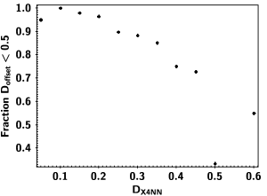
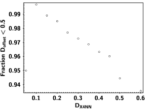
 التي لها
التي لها  . يمينًا: كسر نجوم MILES ذات الأقل من عتبة والتي لها . تُستبعد النجوم ذات من الحسابات الإحصائية.
. يمينًا: كسر نجوم MILES ذات الأقل من عتبة والتي لها . تُستبعد النجوم ذات من الحسابات الإحصائية.نعد قياسات المعلمات لنجم ما معقولة عندما تكون الخاصة به أقل من 0.5. ولتحديد العتبة لمقياس  ، نحسب كسر نجوم MILES ذات
، نحسب كسر نجوم MILES ذات  من بين جميع النجوم ذات
من بين جميع النجوم ذات  الأقل من عتبة، مع استبعاد تلك ذات
الأقل من عتبة، مع استبعاد تلك ذات  .
يعرض الشكل 11
هذا الكسر بوصفه دالة في العتبة المتغيرة. ومن هذا الرسم، نجد أنه عندما نعتمد عتبة قدرها
.
يعرض الشكل 11
هذا الكسر بوصفه دالة في العتبة المتغيرة. ومن هذا الرسم، نجد أنه عندما نعتمد عتبة قدرها  ، تكون لدى 96.9% من النجوم قيمة
، تكون لدى 96.9% من النجوم قيمة  .
.
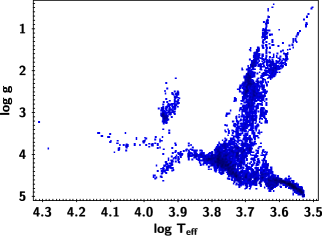
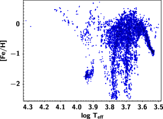
باستخدام العتبة المعرفة بواسطة  ، يمكننا تقييم موثوقية قياس المعلمات لـ MaStar. ومن بين أطياف MaStar البالغ عددها 8646، لدى 87% منها و، وتجتاز اختبار ضبط الجودة. ونعد هذه الحالات ذات تقديرات موثوقة للمعلمات النجمية.
وبناءً على الاختبار القائم على MILES، نتوقع أن تكون لدى 96.9% من هذه الحالات إزاحة في المعلمات أقل من 0.5 في الوحدة المطبعة. ونعرض توزيع معلماتها النجمية في الشكل 12.
ويسرد الجدول 1 هذه القيم، بحيث يمكن مقارنتها إما بقيم الأدبيات أو بطرائق أخرى.
، يمكننا تقييم موثوقية قياس المعلمات لـ MaStar. ومن بين أطياف MaStar البالغ عددها 8646، لدى 87% منها و، وتجتاز اختبار ضبط الجودة. ونعد هذه الحالات ذات تقديرات موثوقة للمعلمات النجمية.
وبناءً على الاختبار القائم على MILES، نتوقع أن تكون لدى 96.9% من هذه الحالات إزاحة في المعلمات أقل من 0.5 في الوحدة المطبعة. ونعرض توزيع معلماتها النجمية في الشكل 12.
ويسرد الجدول 1 هذه القيم، بحيث يمكن مقارنتها إما بقيم الأدبيات أو بطرائق أخرى.
6 الاتساق مع معلمات الإدخال
إلى جانب ضبط الجودة الداخلي أعلاه، يمكننا أيضًا التحقق من المعلمات التي اشتققناها في هذا العمل بفحص اتساقها مع المعلمات النجمية في فهرس الإدخال. وكما ذكر Yan et al. (2019)، انتقينا نجومًا من فهارس معلمات نجمية قائمة، بما في ذلك المعلمات الجوية غير المعايرة من ASPCAP (García Pérez et al., 2016; Holtzman et al., 2018; Jönsson et al., 2018) من أحدث إصدار بيانات لـ SDSS-IV (APOGEE DR16؛ Ahumada et al., 2019)، وSloan Extension for Galactic Understanding and Exploration (SEGUE؛ Yanny et al., 2009)، وLarge Sky Area Multi-Object Fiber Spectroscopic Telescope (LAMOST؛ Cui et al., 2012; Deng et al., 2012; Zhao et al., 2012). وبما أن المعلمات النجمية من هذه المشاريع المذكورة اشتُقت باستخدام طرائق مختلفة، فمن المهم معالجة اتساق المعلمات.
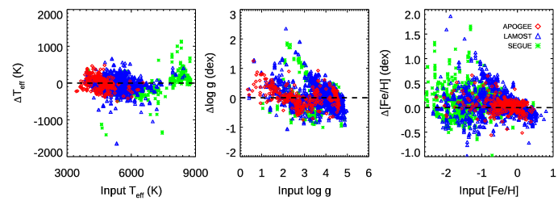
حددنا 2460 طيفًا اجتازت عتبات الجودة ولها معلمات APOGEE، حيث إن 288 منها في فئة المعلمات الدقيقة في APOGEE (García Pérez et al., 2016; Holtzman et al., 2018; Jönsson et al., 2018; Ahumada et al., 2019)،
و1064 طيفًا من هذا النوع لها معلمات SEGUE، و1810 طيفًا لها معلمات LAMOST.
نعرض المعلمات النجمية من هذا العمل مقارنة بهذه المعلمات من الأدبيات في الشكل 13.
متوسط  المحدد في هذا العمل أبرد بنحو 50 K من قيم الأدبيات هذه، مع rms قدره 163 K؛
ومتوسط المحدد في هذا العمل أقل بنحو 0.03 dex من قيم الإدخال في الأدبيات، مع rms قدره 0.30 dex؛
ومتوسط
المحدد في هذا العمل أبرد بنحو 50 K من قيم الأدبيات هذه، مع rms قدره 163 K؛
ومتوسط المحدد في هذا العمل أقل بنحو 0.03 dex من قيم الإدخال في الأدبيات، مع rms قدره 0.30 dex؛
ومتوسط ![$\rm [Fe/H]$](equations/eq_0106.svg) المحدد في هذا العمل أقل بنحو 0.06 dex من قيم الإدخال في الأدبيات، مع rms قدره 0.20 dex.
وهذه القيم متسقة عادة مع دقة معلمات ULySS (مثلًا، Prugniel et al., 2011)، باستثناء
انحراف أكبر في
المحدد في هذا العمل أقل بنحو 0.06 dex من قيم الإدخال في الأدبيات، مع rms قدره 0.20 dex.
وهذه القيم متسقة عادة مع دقة معلمات ULySS (مثلًا، Prugniel et al., 2011)، باستثناء
انحراف أكبر في  ، ويرجح أن ذلك ناتج عن تعدد طرائق الإدخال من مصادر مختلفة.
وفضلًا عن ذلك، تقع هذه الدقات ضمن المجال المطلوب لتركيب تجمعات نجمية متين (100K، Maraston, 2005).
، ويرجح أن ذلك ناتج عن تعدد طرائق الإدخال من مصادر مختلفة.
وفضلًا عن ذلك، تقع هذه الدقات ضمن المجال المطلوب لتركيب تجمعات نجمية متين (100K، Maraston, 2005).
نستكشف أيضًا اتساق المعلمات النجمية من مصادر معلمات إدخال مختلفة.
وجدنا إزاحة سالبة متوسطة مقدارها 9 K عند المقارنة مع  من APOGEE، مع rms قدره 174 K؛
ووجدنا إزاحة سالبة متوسطة مقدارها 71 K عند المقارنة مع
من APOGEE، مع rms قدره 174 K؛
ووجدنا إزاحة سالبة متوسطة مقدارها 71 K عند المقارنة مع  من SEGUE، مع rms قدره 167 K؛
ووجدنا إزاحة سالبة متوسطة مقدارها 41 K عند المقارنة مع
من SEGUE، مع rms قدره 167 K؛
ووجدنا إزاحة سالبة متوسطة مقدارها 41 K عند المقارنة مع  من LAMOST، مع rms قدره 154 K.
ووجدنا إزاحة متوسطة مقدارها 0.01 dex عند المقارنة مع
من LAMOST، مع rms قدره 154 K.
ووجدنا إزاحة متوسطة مقدارها 0.01 dex عند المقارنة مع  من APOGEE، مع rms قدره 0.32 dex؛
ووجدنا إزاحة سالبة متوسطة مقدارها 0.07 dex عند المقارنة مع
من APOGEE، مع rms قدره 0.32 dex؛
ووجدنا إزاحة سالبة متوسطة مقدارها 0.07 dex عند المقارنة مع  من SEGUE، مع rms قدره 0.29 dex؛
ووجدنا إزاحة سالبة متوسطة مقدارها 0.01 dex عند المقارنة مع
من SEGUE، مع rms قدره 0.29 dex؛
ووجدنا إزاحة سالبة متوسطة مقدارها 0.01 dex عند المقارنة مع  من LAMOST، مع rms قدره 0.29 dex.
ووجدنا إزاحة سالبة متوسطة مقدارها 0.03 dex عند المقارنة مع
من LAMOST، مع rms قدره 0.29 dex.
ووجدنا إزاحة سالبة متوسطة مقدارها 0.03 dex عند المقارنة مع ![$\rm [Fe/H]$](equations/eq_0114.svg) من APOGEE، مع rms قدره 0.13 dex؛
ووجدنا إزاحة موجبة متوسطة مقدارها 0.10 dex عند المقارنة مع من SEGUE، مع rms قدره 0.23 dex؛
ووجدنا إزاحة موجبة متوسطة مقدارها 0.04 dex عند المقارنة مع
من APOGEE، مع rms قدره 0.13 dex؛
ووجدنا إزاحة موجبة متوسطة مقدارها 0.10 dex عند المقارنة مع من SEGUE، مع rms قدره 0.23 dex؛
ووجدنا إزاحة موجبة متوسطة مقدارها 0.04 dex عند المقارنة مع ![$\rm [Fe/H]$](equations/eq_0116.svg) من LAMOST، مع rms قدره 0.19 dex.
وعمومًا، وبالنظر إلى rms بوصفه الدقة النموذجية لمعلمات ULySS، تتفق نتائجنا جيدًا مع المعلمات النجمية المدخلة.
من LAMOST، مع rms قدره 0.19 dex.
وعمومًا، وبالنظر إلى rms بوصفه الدقة النموذجية لمعلمات ULySS، تتفق نتائجنا جيدًا مع المعلمات النجمية المدخلة.
نقر بأنه نظرًا إلى المستوفي القالب المتاح (أي Prugniel et al., 2011)، الذي لا يتضمن بُعد ![$[\alpha/Fe]$](equations/eq_0117.svg) ، فإننا لا نقدم
، فإننا لا نقدم ![$[\alpha/Fe]$](equations/eq_0118.svg) في هذا العمل.
ويعمل فريقنا على طرائق مختلفة لتقدير المعلمات النجمية. وسيُتناول بُعد في عمل مستقبلي.
في هذا العمل.
ويعمل فريقنا على طرائق مختلفة لتقدير المعلمات النجمية. وسيُتناول بُعد في عمل مستقبلي.
7 الخلاصة
فحصنا 8646 طيفًا من الإصدار الأول من MaStar لتقدير معلماتها النجمية الأساسية، باستخدام مستوفي MILES
(Prugniel et al., 2011) وحزمة ملاءمة الطيف الكامل ULySS.
وأجرينا فحص اتساق لهذه الطريقة في الملاءمة بتمرير الأطياف نفسها المستخدمة لبناء المستوفي عبر خوارزمية الملاءمة.
يبين اختبار الإدخال-الإخراج هذا أن الخوارزمية ليست متينة دائمًا. وعرّفنا مجموعة من المعايير لتحديد مناطق فضاء المعلمات التي يكون فيها تطبيق طريقة الملاءمة هذه مأمونًا، وقيّمنا نقاء العينة الناتجة. ونقدم معلمات مجموعة فرعية من أطياف MaStar تقع ضمن المنطقة المأمونة المحددة من فضاء المعلمات.
تغطي معلماتنا النجمية ‘المأمونة’ مجالًا واسعًا من فضاء المعلمات: ،
والجاذبية السطحية ، والفلزية .
وبالنسبة إلى النجوم المشتركة مع مسوح APOGEE وSEGUE وLAMOST، قارنا النتائج بالمعلمات المشتقة في هذه المسوح ووجدنا اتفاقًا جيدًا: فمتوسط فروق  المحددة في هذا العمل أبرد بنحو 50 K من
المحددة في هذا العمل أبرد بنحو 50 K من
 المدخلة، مع rms قدره 163 K؛ ومتوسط فروق
المدخلة، مع rms قدره 163 K؛ ومتوسط فروق  المحددة في هذا العمل أقل بنحو 0.03 dex من
المحددة في هذا العمل أقل بنحو 0.03 dex من
 المدخلة، مع rms قدره 0.30 dex؛ ومتوسط فروق
المدخلة، مع rms قدره 0.30 dex؛ ومتوسط فروق ![$\rm [Fe/H]$](equations/eq_0127.svg) المحددة في هذا العمل أقل بنحو 0.06 dex من قيم الإدخال، مع rms قدره 0.20 dex.
لاحظ أن هذا العمل يستند إلى مستوفي مكتبة MILES النجمية. وقد لا تمتلك أجسام MaStar الواقعة خارج فضاء معلمات MILES
تقديرات مأمونة لمعلماتها النجمية. لذلك لا نسرد إلا المعلمات التي اجتازت اختبارات ضبط الجودة.
وقد استُخدمت هذه المعلمات بالفعل في حساب أول نماذج للتجمعات النجمية قائمة على MaStar
(Maraston et al., 2020 in press). وقد اختُبرت النماذج باستخدام أطياف عناقيد كروية في درب التبانة، وحصلت على نتائج جيدة، مما يوفر اطمئنانًا
إلى الجودة العامة لهذه المعلمات (انظر التفاصيل في Maraston et al., 2020 in press).
المحددة في هذا العمل أقل بنحو 0.06 dex من قيم الإدخال، مع rms قدره 0.20 dex.
لاحظ أن هذا العمل يستند إلى مستوفي مكتبة MILES النجمية. وقد لا تمتلك أجسام MaStar الواقعة خارج فضاء معلمات MILES
تقديرات مأمونة لمعلماتها النجمية. لذلك لا نسرد إلا المعلمات التي اجتازت اختبارات ضبط الجودة.
وقد استُخدمت هذه المعلمات بالفعل في حساب أول نماذج للتجمعات النجمية قائمة على MaStar
(Maraston et al., 2020 in press). وقد اختُبرت النماذج باستخدام أطياف عناقيد كروية في درب التبانة، وحصلت على نتائج جيدة، مما يوفر اطمئنانًا
إلى الجودة العامة لهذه المعلمات (انظر التفاصيل في Maraston et al., 2020 in press).
| MANGAID | RA | DEC | err | err | err | ||||
|---|---|---|---|---|---|---|---|---|---|
| (deg) | (deg) | (K) | (cgs) | (K) | (cgs) | (dex) | |||
| 7-17152035 | 288.1182 | 51.4476 | 5124 | 2.31 | 1.36 | 5 | 0.01 | 0.01 | 5.07 |
| 7-17443125 | 290.2698 | 51.3453 | 4502 | 2.15 | 0.38 | 4 | 0.01 | 0.01 | 3.34 |
| 7-17373411 | 290.1849 | 49.8035 | 4839 | 2.33 | 0.29 | 3 | 0.01 | 0.00 | 6.16 |
| 7-17182569 | 288.5502 | 49.5116 | 4855 | 3.18 | 0.30 | 4 | 0.01 | 0.00 | 4.00 |
| 7-17182569 | 288.5502 | 49.5116 | 4868 | 3.26 | 0.29 | 6 | 0.02 | 0.01 | 2.28 |
| 7-17113356 | 287.2459 | 51.0213 | 4797 | 2.21 | 0.65 | 3 | 0.01 | 0.00 | 5.03 |
| 7-17372978 | 289.7807 | 50.2919 | 4583 | 1.59 | 0.99 | 6 | 0.02 | 0.01 | 2.94 |
| 7-16750617 | 282.3300 | 43.3356 | 4144 | 1.90 | 0.23 | 1 | 0.01 | 0.00 | 9.48 |
| 7-16565620 | 282.0194 | 44.5682 | 5451 | 3.43 | 0.12 | 4 | 0.01 | 0.01 | 4.48 |
| 7-16557545 | 281.6392 | 44.0813 | 3840 | 1.61 | 0.03 | 1 | 0.00 | 0.00 | 14.38 |
-
•
عينة من المعلمات النجمية من هذا العمل. الجدول الكامل متاح بصيغة رقمية فقط.
شكر وتقدير
استفاد هذا المشروع من بيانات أُخذت ضمن SDSS-IV.
قُدم تمويل Sloan Digital Sky Survey IV من Alfred P. Sloan Foundation، ومن Office of Science في U.S. Department of Energy، ومن المؤسسات المشاركة. ويقر SDSS-IV بالدعم والموارد المقدمة من Center for High-Performance Computing في University of Utah. وموقع SDSS على الشبكة هو www.sdss.org.
يدير Astrophysical Research Consortium مشروع SDSS-IV نيابة عن المؤسسات المشاركة في تعاون SDSS، وتشمل Brazilian Participation Group، وCarnegie Institution for Science، وCarnegie Mellon University، وChilean Participation Group، وFrench Participation Group، وHarvard-Smithsonian Center for Astrophysics، وInstituto de Astrofísica de Canarias، وThe Johns Hopkins University، وKavli Institute for the Physics and Mathematics of the Universe (IPMU) / University of Tokyo، وKorean Participation Group، وLawrence Berkeley National Laboratory، وLeibniz Institut für Astrophysik Potsdam (AIP)، وMax-Planck-Institut für Astronomie (MPIA Heidelberg)، وMax-Planck-Institut für Astrophysik (MPA Garching)، وMax-Planck-Institut für Extraterrestrische Physik (MPE)، وNational Astronomical Observatories of China، وNew Mexico State University، وNew York University، وUniversity of Notre Dame، وObservatário Nacional / MCTI، وThe Ohio State University، وPennsylvania State University، وShanghai Astronomical Observatory، وUnited Kingdom Participation Group، وUniversidad Nacional Autónoma de México، وUniversity of Arizona، وUniversity of Colorado Boulder، وUniversity of Oxford، وUniversity of Portsmouth، وUniversity of Utah، وUniversity of Virginia، وUniversity of Washington، وUniversity of Wisconsin، وVanderbilt University، وYale University.
يقر T. C. B. بالدعم الجزئي من المنحة PHY 14-30152 (Physics Frontier Center/JINA-CEE)، الممنوحة من U.S. National Science Foundation.
يحظى J.G.F-T بدعم FONDECYT No. 3180210 وBecas Iberoamérica Investigador 2019، Banco Santander Chile.
كما يحظى بحث J. D G. بدعم NYU Abu Dhabi Grant AD022. وتقر Y. C. بدعم NYU Abu Dhabi AD013 وNYU Abu Dhabi Grant AD022.
References
- Aguado et al. (2019) Aguado, D. S., Ahumada, R., Almeida, A., et al. 2019, ApJS, 240, 23A
- Ahumada et al. (2019) Ahumada, Romina, Allende Prieto, Carlos, Almeida, Andres et al., 2019, arXiv, 191202905A
- Allen (1973) Allen, C. W., 1973, asqu.book, A
- Beifiori et al. (2011) Beifiori, A., Maraston, C., Thomas, D., Johansson, J., 2011, A&A, 531A, 109B
- Blanton et al. (2017) Blanton, M. R., Bershady, M. A., Abolfathi, B., et al. 2017, AJ, 154, 28B
- Bohlin et al. (2017) Bohlin, R. C., Mészáros, S., Fleming, S. W., et al. 2017, AJ, 153, 234B
- Bundy et al. (2015) Bundy, Kevin, Bershady, Matthew A., Law, David R., et al., 2015, ApJ, 798, 7B
- Cardelli et al. (1989) Cardelli, J. A., Clayton, G. C., Mathis, J. S., 1989, ApJ, 345, 245C
- Casagrande et al. (2008) Casagrande, L., Flynn, C., Bessell, M., 2008, MNRAS, 389, 585C
- Cenarro et al. (2001) Cenarro, A. J., Cardiel, N., Gorgas, J., et al., 2001, MNRAS, 326, 959,
- Cenarro et al. (2007) Cenarro, A. J., Peletier, R. F., Sánchez-Blázquez, P., et al. 2007, MNRAS, 374, 664C
- Chambers et al. (2016) Chambers, K. C., Magnier, E. A., Metcalfe, N., et al. 2016, ArXiv: 1612.05560
- Chen et al. (2014) Chen, Yan-Ping, Trager, S. C., Peletier, R. F., et al. 2014, A&A, 565A,117C
- Coelho et al. (2005) Coelho, P., Barbuy, B., Meléndez, J., Schiavon, R. P., Castilho, B. V., 2005, A&A, 443, 735C
- Coelho et al. (2007) Coelho, P., Bruzual, G., Charlot, S., et al., 2007, MNRAS, 382, 498
- Coelho et al. (2020) Coelho, P. R. T., Bruzual, G., & Charlot, S., 2020, MNRAS, 491, 2025C
- Conroy & van Dokkum (2012) Conroy, Charlie, van Dokkum, Pieter, 2012, ApJ, 747, 69C
- Cui et al. (2012) Cui, X.-Q., Zhao, Y.-H., Chu, Y.-Q., et al. 2012, Research in Astronomy and Astrophysics, 12, 1197, doi: 10.1088/1674-4527/12/9/003
- de Laverny et al. (2012) de Laverny, P., Recio-Blanco, A., Worley, C. C.,, Plez, B. 2012, A&A, 544, A126
- Deng et al. (2012) Deng, L.-C., Newberg, H. J., Liu, C., et al. 2012, Research in Astronomy and Astrophysics, 12, 735, doi: 10.1088/1674-4527/12/7/003
- Diaz et al. (1989) Diaz, A. I., Terlevich, E., Terlevich, R., 1989, MNRAS, 239, 325D
- Falcón-Barroso et al. (2011) Falcón-Barroso, J., Sánchez-Blázquez, P., Vazdekis, A., et al., 2011, A&A, 532A, 95F
- García Pérez et al. (2016) García Pérez, A. E., Allende Prieto, C., Holtzman, J. A., et al. 2016, AJ 151, 144G
- Gregg et al. (2006) Gregg, M. D., Silva, D., Rayner, J., et al. 2006, hstc, conf, 209G
- Gustafsson et al. (2008) Gustafsson, B., Edvardsson, B., Eriksson, K., et al., 2008, A&A, 486, 951G
- Holtzman et al. (2018) Holtzman, Jon A., Hasselquist, Sten, Shetrone, Matthew et al., 2018, AJ, 156, 125H
- Jönsson et al. (2018) Jönsson, Henrik, Allende Prieto, Carlos, Holtzman, Jon A., et al. 2018, AJ, 156, 126J
- Koleva et al. (2008) Koleva, M., Prugniel, P., Ocvirk, P., Le Borgne, D., Soubiran, C., 2008, MNRAS, 385, 1998K
- Kurucz (1979) Kurucz, R. L., 1979, ApJS, 40, 1K
- Lançon & Wood (2000) Lançon, A., Wood, P. R., 2000, A&AS, 146, 217
- Law et al. (2016) Law, D. R., Cherinka, B., Yan, R., et al. 2016, AJ, 152, 83
- Le Borgne et al. (2003) Le Borgne, J.-F., Bruzual, G., Pelló, R., et al. 2003, A&A, 402, 433L
- Lejeune et al. (1998) Lejeune, T., Cuisinier, F., Buser, R.,1998, A&AS, 130, 65L
- Leitherer et al. (2010) Leitherer, Claus, Ortiz Otálvaro, Paula A. et al., 2010, ApJS, 189, 309L
- Majewski et al. (2017) Majewski, Steven R., Schiavon, Ricardo P., Frinchaboy, Peter M., 2017, AJ, 154, 94M
- Maraston (2005) Maraston, Claudia, 2005, MNRAS, 362, 799M
- Maraston & Strömbäck (2011) Maraston, C., Strömbäck, G., 2011, MNRAS, 418, 2785M
- Maraston et al. (2020 in press) Maraston, C., Hill, L., Thomas, D., et al., 2020, MNRAS.tmp.1662M, (2019arXiv191105748M)
- Martins et al. (2005) Martins, L. P., González Delgado, R. M., Leitherer, C., Cerviño, M., & Hauschildt, P., 2005, MNRAS, 358, 49M
- Munari et al. (2005) Munari, U., Sordo, R., Castelli, F., Zwitter, T. 2005, A&A, 442,1127M
- Neves et al. (2013) Neves, V., Bonfils, X., Santos, N. C., Delfosse, X., Forveille, T., Allard, F., Udry, S.,2013, A&A, 551A, 36N
- Pickles (1985) Pickles, A. J., 1985, ApJS, 59, 33P
- Pickles (1998) Pickles, A. J., 1998, PASP, 110, 863P
- Prugniel & Soubiran (2001) Prugniel, Ph., Soubiran, C. 2001, A&A, 369, 1048P
- Prugniel et al. (2007) Prugniel, P., Koleva, M., Ocvirk, P., Le Borgne, D., Soubiran, C., 2007, IAUS, 241, 68P
- Prugniel et al. (2011) Prugniel, P., Vauglin, I., Koleva, M., 2011, A&A, 531A, 165P
- Rayner et al. (2009) Rayner, J. T., Cushing, M. C., Vacca, W. D. 2009, ApJS, 185, 289
- Sánchez-Blázquez et al. (2006) Sánchez-Blázquez, P., Peletier, R. F., Jiménez-Vicente, J., et al. 2006, MNRAS, 371, 703S
- Silva &Cornell (1992) Silva, D. R., Cornell, M. E., 1992, ApJS, 81, 865, doi: 10.1086/191706
- Sharma et al. (2016) Sharma, K., Prugniel, P., Singh, H-P., 2016, A&A, 585A, 64S
- Valdes et al. (2004) Valdes, F., Gupta, R., Rose, J. A., Singh, H. P., Bell, D. J., 2004, ApJS, 152, 251, doi: 10.1086/386343
- Vazdekis et al. (2010) Vazdekis, A., Sánchez-Blázquez, P., Falcón-Barroso, J., et al.,2010, MNRAS, 404, 1639V
- Villaume et al. (2017) Villaume, A., Conroy, C., Johnson, B., et al. 2017, ApJS, 230, 23
- Worthey et al. (1994) Worthey, G., Faber, S. M., Gonzalez, J. J., Burstein, D., 1994, ApJS, 94, 687
- Wu et al. (2011) Wu, Y., Singh, H. P., Prugniel, P., Gupta, R., Koleva, M., 2011, A&A, 525A, 71W
- Yan et al. (2016) Yan, R., Tremonti, C., Bershady, M. A., et al. 2016, AJ, 151, 8Y
- Yan et al. (2019) Yan, R., Chen, Y.-P., Lazarz, D., et al., 2019, ApJ, .883, 175Y
- Yanny et al. (2009) Yanny, B., Rockosi, C., Newberg, H. J., et al. 2009, AJ, 137, 4377, doi: 10.1088/0004-6256/137/5/4377
- Zhao et al. (2012) Zhao, G., Zhao, Y.-H., Chu, Y.-Q., Jing, Y.-P., Deng, L.-C. 2012, Research in Astronomy and Astrophysics, 12, 723, doi: 10.1088/1674-4527/12/7/002
- Zwitter et al. (2004) Zwitter, T., Castelli, F., Munari, U. 2004, A&A, 417, 1055